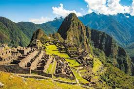

machu pichu

Machu Picchu (pronunciado /'m?t??? 'p?kt???/ en quechua, «monte viejo») es el nombre contemporáneo que se da a una llacta —antiguo poblado incaico andino—
construida antes del siglo xv, ubicada en la Cordillera Oriental del sur del Perú, en la cadena montañosa de los Andes a 2430 metros sobre el nivel del mar.1?2? Está ubicada en el departamento del Cusco
(provincia de Urubamba, distrito de Machupicchu) sobre el Valle Sagrado de los Incas,3?4?5? a 80 kilómetros al noroeste del Cusco, ciudad del Perú y por donde fluye el río Urubamba,6?7?
río que atraviesa la cordillera y origina un cañón con clima de montaña tropical. Según muchos estudios su nombre original habría sido Lladaqata.